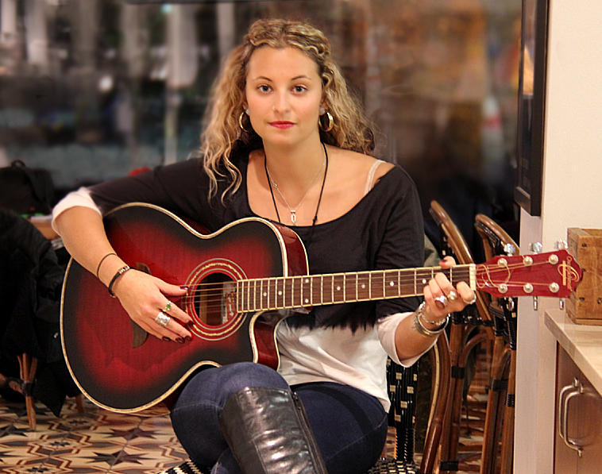
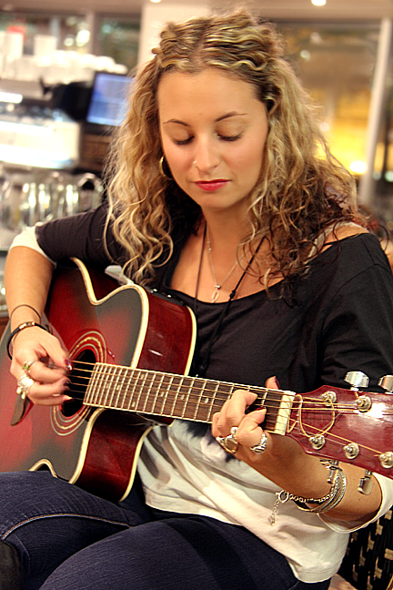

Article and photos by Edith Nataprawira
Uploaded on January 12, 2013
|
There was a low rumble of conversation in the café when I met Collette Andrea for the first time. Several rounds of email tag had finally paid off, as the high waters that were Andrea’s fourth year social work co-op schedule finally parted and gave us enough time to meet. The self-taught musician made learning an instrument without formal instruction seem deceptively easy as she strummed her guitar over the din. Andrea explained that she had taught herself to play bass guitar when she was 12 years-old. At 14, she began to write and perform her own songs, dabbling with different sounds and musical chords. When asked to describe her own music, Andrea notes that her songs tend to “lean towards the contemplative.” Andrea’s lyrics speak of her own experiences, encounters with strange acquaintances, and even simple daily occurrences. |

Spotlight Editor in Chief
Vjosa Isai
vjosa.isai@ryerson.ca
Want to get your time under the lights? Are you a writer looking to join the Artist Spotlight initiative? E-mail us at music@ryerson.ca to see how!